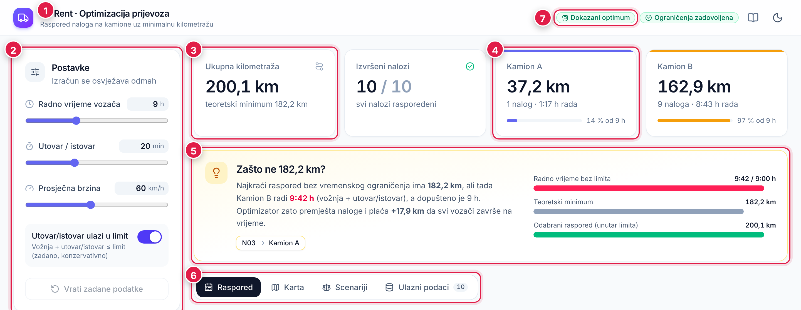
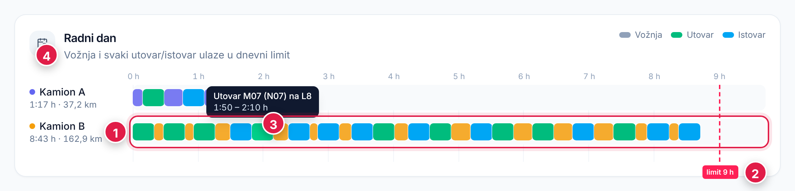
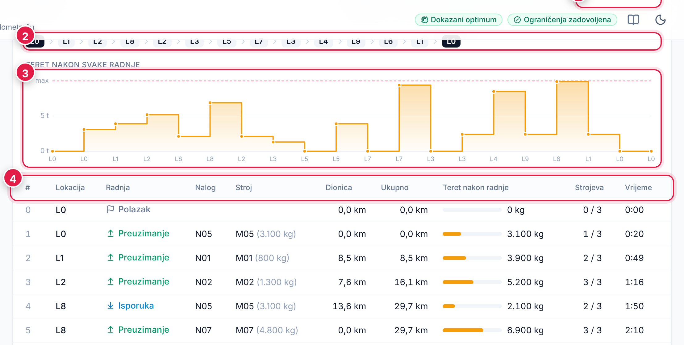
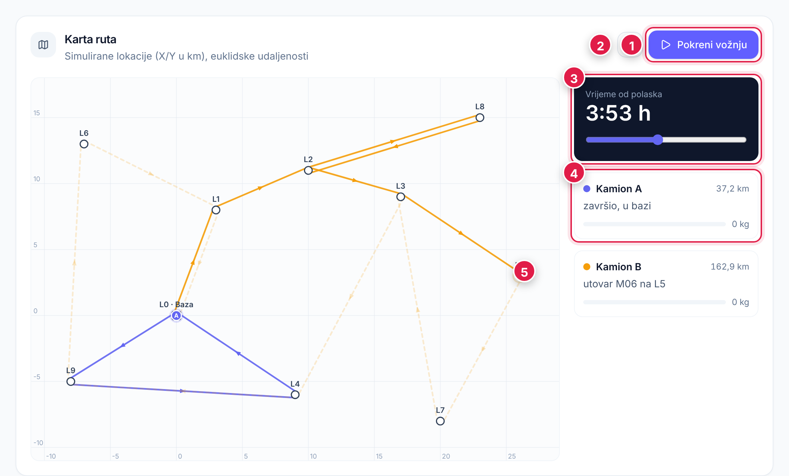
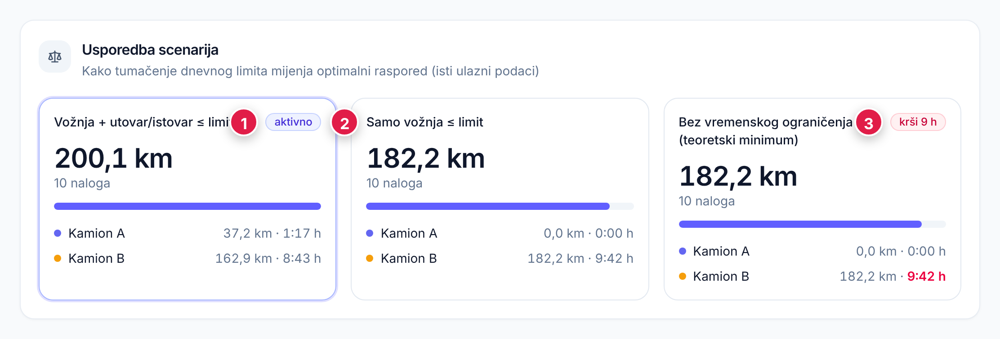
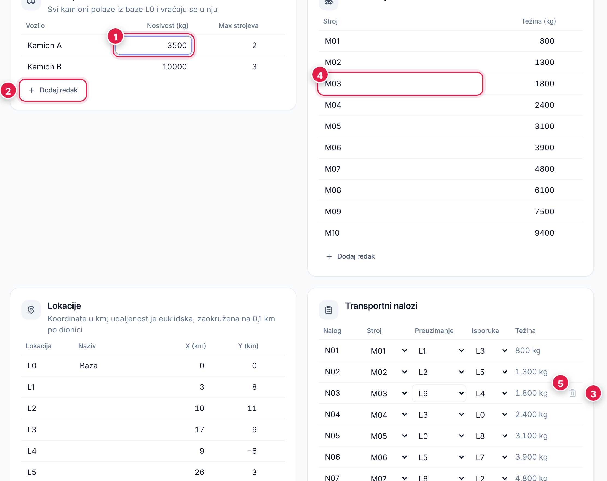
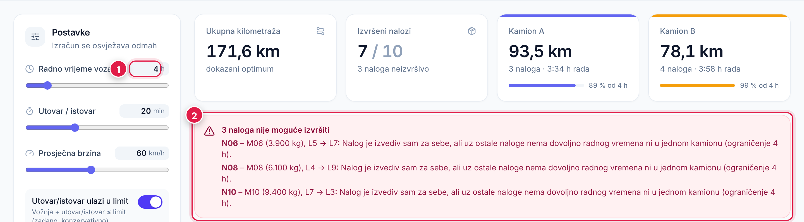
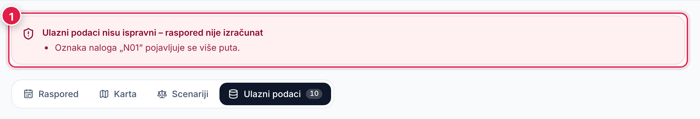
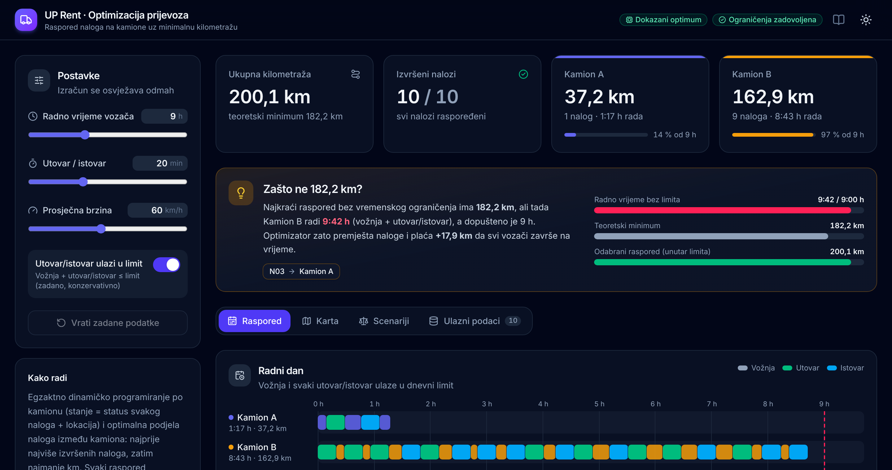

Sadržaj
Upute su pisane tako da se svaki dio može čitati zasebno. Ako aplikaciju pokrećete prvi put, krenite od poglavlja 2 – Brzi start; za rad u sučelju dovoljna su poglavlja 4 i 5.
- 1Ukratkošto aplikacija radi i ključni rezultati–
- 2Brzi startpokretanje u tri koraka–
- 3Instalacija detaljnoWindows, macOS, Linux, razvojni način–
- 4Vodič kroz sučeljedijelovi zaslona–
- 5Kartice korak po korakRaspored, Karta, Scenariji, Ulazni podaci–
- 6Česti zadacirecepti za svakodnevni rad–
- 7Kako radi optimizacijamodel, algoritam, pravila izračuna–
- 8Poslovna pravila i provjeravalidator, testovi, OR-Tools–
- 9Rješavanje problemasimptom → uzrok → rješenje–
- 10DodatakREST API, struktura projekta, pojmovnik–
Kako čitati ove upute
Prečac ili način da nešto napravite brže.
Dodatno objašnjenje ili pozadina.
Nešto što utječe na rezultat – vrijedi pročitati.
Crveni brojevi na snimkama zaslona odgovaraju legendi ispod slike.
$ naredba-koju-upisujete # komentar (ne upisuje se) ispis koji očekujete
Znak $ (ili > na Windowsu) označava početak naredbe i ne upisuje se. Brojke u
uputama odnose se na podatke iz zadatka; nakon izmjene podataka u aplikaciji bit će drukčije.
Što aplikacija radi
Aplikacija rješava zadatak prijevoza 10 radnih strojeva između 10 lokacija pomoću dva kamiona: odlučuje koji kamion vozi koji stroj, kojim redoslijedom obilazi lokacije i kako smanjiti ukupnu kilometražu, a da pritom ne prekrši nijedno poslovno pravilo.
Ulazni podaci zadatka
Vozni park
| Vozilo | Nosivost | Max strojeva |
|---|---|---|
| Kamion A | 3.500 kg | 2 |
| Kamion B | 10.000 kg | 3 |
Pravila rada
- oba kamiona polaze iz baze L0 i moraju se vratiti
- vozač radi najviše 9 h dnevno
- svaki utovar i istovar traje 20 min
- prosječna brzina 60 km/h; euklidska udaljenost, zaokružena na 0,1 km po dionici
Što aplikacija jamči
| Zahtjev | Kako je ispunjen |
|---|---|
| Nosivost i broj strojeva u svakom trenutku | Algoritam nedopuštena stanja ni ne generira; validator ih ponovno provjerava nakon svake radnje. |
| Preuzimanje prije isporuke, isti kamion | Ugrađeno u model stanja (čeka → na kamionu → isporučen). |
| Najmanja ukupna kilometraža | Egzaktna optimizacija; rezultat potvrđen Google OR-Toolsom i brute-forceom. |
| Jasno upozorenje za neizvršive naloge | Crveni okvir s popisom naloga i razlogom (preteško / nema dovoljno radnog vremena). |
Najkraći mogući raspored ima 182,2 km: sve vozi Kamion B. No 10 naloga znači 20 radnji × 20 min = 6 h 40 min utovara/istovara, uz 3 h 2 min vožnje – ukupno 9 h 42 min, što je preko limita od 9 h. Optimizator zato nalog N03 (L9 → L4) daje Kamionu A (+17,9 km) i oba vozača završavaju na vrijeme. Detalji su u poglavlju 7.
Pokretanje u tri koraka
Potrebni su Python 3.10+ i Node.js 20.19+ (preporuka 22 LTS). Naredbe se upisuju u terminal (Windows: PowerShell ili Command Prompt; macOS/Linux: Terminal) iz mape projekta.
- Preuzmite projekt i instalirajte Python pakete
$ git clone https://github.com/iburic55/uprent-transport-optimizer.git $ cd uprent-transport-optimizer $ pip install -r requirements.txt
- Izgradite web sučelje (samo prvi put i nakon izmjena frontenda)
$ cd frontend $ npm install $ npm run build $ cd ..
- Pokrenite aplikaciju
$ uvicorn api.main:app INFO: Uvicorn running on http://127.0.0.1:8000
U pregledniku otvorite http://localhost:8000. Raspored se izračuna odmah – na vrhu trebate vidjeti 200,1 km i 10 / 10 te zelene oznake „Dokazani optimum” i „Ograničenja zadovoljena”. Zaustavljanje: Ctrl + C; ponovno pokretanje istom naredbom (koraci 1 i 2 se ne ponavljaju).
$ pytest -q 31 passed $ python -m optimizer # isti raspored ispisan u terminalu
Što je gdje
| Adresa | Namjena |
|---|---|
http://localhost:8000 | Web aplikacija (React sučelje) |
http://localhost:8000/docs | Interaktivna dokumentacija REST API-ja (Swagger) |
docs/demo.mp4 | Video demonstracija s titlom za svaki korak (4:45) |
Instalacija i načini pokretanja
Preduvjeti
| Alat | Verzija | Provjera | Preuzimanje |
|---|---|---|---|
| Python | 3.10 ili novija | python --version | python.org |
| Node.js (s npm-om) | 20.19+ ili 22 LTS | node -v | nodejs.org |
| Git (neobavezno) | bilo koja | git --version | git-scm.com – ili preuzmite ZIP s GitHuba |
Preporučeno: virtualno okruženje za Python
Paketi se tada instaliraju samo za ovaj projekt i ne miješaju se s ostatkom sustava.
> py -m venv .venv > .venv\Scripts\Activate.ps1 > pip install -r requirements.txt
$ python3 -m venv .venv $ source .venv/bin/activate $ pip install -r requirements.txt
Windows: ako PowerShell odbije aktivaciju, jednom pokrenite
Set-ExecutionPolicy -Scope CurrentUser RemoteSigned; umjesto python često se koristi py.
Razvojni način (automatsko osvježavanje)
Za izmjene koda pokrenite backend i frontend u dva terminala; promjene se vide odmah, bez ponovnog builda.
$ uvicorn api.main:app --reload
$ cd frontend $ npm run dev ➜ Local: http://localhost:5173
U razvojnom načinu aplikacija je na http://localhost:5173; Vite zahtjeve prema /api
automatski prosljeđuje backendu na portu 8000.
Rezervno sučelje bez Node.js-a
Iste funkcije (isti optimizator i validator) u jednostavnijem Streamlit sučelju:
$ streamlit run app.py → http://localhost:8501
Neovisna provjera (neobavezno)
Usporedba s Google OR-Toolsom – mora dati iste kilometraže:
$ pip install ortools $ python tools/verify_ortools.py DP = 200.1 km | OR-Tools = 200.1 km DP = 182.2 km | OR-Tools = 182.2 km
Dijelovi zaslona
Sučelje ima tri razine: postavke lijevo, sažetak rezultata na vrhu i kartice s detaljima ispod. Svaka promjena postavki ili podataka odmah pokreće novi izračun.

- 1Zaglavlje – naziv, oznake stanja, poveznica na API dokumentaciju i prekidač teme.
- 2Postavke – radno vrijeme, trajanje utovara/istovara, brzina i tumačenje limita.
- 3Ukupna kilometraža – zbroj oba kamiona; ispod je teoretski minimum.
- 4Kartica kamiona – km, broj naloga, radno vrijeme i iskorištenost limita (traka).
- 5„Zašto ne 182,2 km?” – objašnjenje zamke s 9 h i premještenih naloga.
- 6Kartice – Raspored, Karta, Scenariji, Ulazni podaci.
- 7Oznake stanja – „Dokazani optimum” i „Ograničenja zadovoljena” (nezavisni validator).
Postavke
| Postavka | Zadano | Značenje |
|---|---|---|
| Radno vrijeme vozača | 9 h | Dnevni limit po kamionu (1–24 h). |
| Utovar / istovar | 20 min | Trajanje svakog pojedinog utovara i istovara. |
| Prosječna brzina | 60 km/h | Pretvara kilometre u vrijeme vožnje. |
| Utovar/istovar ulazi u limit | uključeno | Uključeno: vožnja + radnje ≤ limit (konzervativno). Isključeno: limit vrijedi samo za vožnju. |
Vrijednost možete upisati u polje desno od naziva ili povući klizač. Gumb „Vrati zadane podatke” postaje aktivan čim nešto promijenite.
Raspored
Kartica Raspored odgovara na pitanje „tko, kamo i kada”: radni dan oba kamiona na zajedničkoj vremenskoj osi i detaljan plan svakog kamiona.
Radni dan

- 1Redak kamiona – vožnja (boja kamiona), utovar (zeleno), istovar (plavo).
- 2Crvena crta – dnevni limit radnog vremena (9 h).
- 3Opis segmenta – prijeđite mišem preko segmenta za radnju i vrijeme.
- 4Legenda boja.
Plan pojedinog kamiona

- 1Sažetak – km, broj naloga, vožnja + radnje = ukupno vrijeme, vrh tereta.
- 2Redoslijed lokacija – od baze L0 do povratka u L0.
- 3Graf tereta – teret nakon svake radnje; isprekidana crta je nosivost.
- 4Tablica radnji – lokacija, radnja, nalog, stroj, dionica i ukupno km, teret i broj strojeva nakon radnje, vrijeme od polaska.
Karta
Prikazuje rute oba kamiona na simuliranim koordinatama (X/Y u km). Strelice pokazuju smjer vožnje. Ako dva kamiona voze istom dionicom, linije su malo razmaknute da se obje vide.

- 1Pokreni vožnju / Pauza – animira cijeli radni dan (≈ 14 s).
- 2Ispočetka – animacija od 0:00.
- 3Sat i klizač – vrijeme od polaska; klizačem se ide na bilo koji trenutak.
- 4Stanje kamiona – trenutna radnja i teret.
- 5Oznaka kamiona na karti; prijeđene dionice su pune, buduće prigušene.
Scenariji
Ista ulazna data, tri tumačenja dnevnog limita. Korisno za objašnjenje zašto je rezultat 200,1 km, a ne teoretskih 182,2 km.

- 1Aktivni scenarij – odgovara trenutnim postavkama.
- 2Samo vožnja ≤ limit – ako se u 9 h broji samo vožnja, 182,2 km je dopušten.
- 3„krši 9 h” – teoretski minimum prekoračuje radno vrijeme (Kamion B 9:42 h).
Ulazni podaci
Sve četiri tablice iz zadatka mogu se mijenjati izravno u sučelju; raspored se preračuna nakon svake izmjene (s kratkom odgodom od 0,3 s dok tipkate).

- 1Ćelija za unos – kliknite i upišite; brojevi prihvaćaju i negativne vrijednosti (koordinate).
- 2Dodaj redak – novi kamion, stroj, lokacija ili nalog s predloženom oznakom.
- 3Obriši redak – ikona koša pojavi se kad mišem prijeđete preko retka.
- 4Padajući izbornik – stroj i lokacije naloga biraju se s popisa.
- 5Težina – automatski iz tablice strojeva.
Recepti za svakodnevni rad
Promijeniti radno vrijeme
- U Postavkama upišite novu vrijednost uz „Radno vrijeme vozača”.
- Pogledajte sažetak na vrhu – izračun je odmah ažuriran.
Dodati novi nalog
- Kartica Ulazni podaci → tablica Transportni nalozi → Dodaj redak.
- Odaberite stroj, preuzimanje i isporuku iz izbornika.
Dodati kamion ili lokaciju
- Dodaj redak u tablici Vozni park ili Lokacije.
- Upišite nosivost i broj mjesta, odnosno X i Y koordinatu u km.
Vratiti početno stanje
- Kliknite Vrati zadane podatke u Postavkama.
- Vraćaju se podaci i postavke iz zadatka (200,1 km).
Kad nalog nije moguće izvršiti
Ako ograničenja ne dopuštaju sve naloge, aplikacija izvrši najviše mogućih uz najmanje km, a ostale navede u crvenom okviru s razlogom. Primjer: radno vrijeme 4 h.

- 1Radno vrijeme postavljeno na 4 h.
- 2Izvršeno 7 od 10 naloga (171,6 km); N06, N08 i N10 nemaju dovoljno radnog vremena.
| Razlog u okviru | Značenje | Što učiniti |
|---|---|---|
| „… preteži od nosivosti svih kamiona” | Stroj je teži od svakog kamiona. | Dodati kamion veće nosivosti ili ispraviti težinu. |
| „… izvediv sam za sebe, ali uz ostale naloge nema dovoljno radnog vremena” | Nalog stane, ali ne i uz ostale u istom danu. | Produžiti radno vrijeme, dodati kamion ili prebaciti nalog na drugi dan. |
| „Ni jedan kamion ne može odraditi ovaj nalog unutar … h” | Ni sam nalog (baza → preuzimanje → isporuka → baza) ne stane u limit. | Produžiti radno vrijeme ili provjeriti lokacije. |
| „Nepoznata lokacija …” | Lokacija naloga ne postoji u tablici Lokacije. | Dodati lokaciju ili odabrati postojeću. |
Neispravan unos
Podaci koji nemaju smisla (dupla oznaka, težina ili nosivost ≤ 0, ista lokacija preuzimanja i isporuke, nepostojeći stroj, nedostaje baza L0) se ne računaju – aplikacija prikaže što treba ispraviti.

- 1Primjer: oznaka N01 upisana dvaput. Nakon ispravka raspored se odmah izračuna.
Tamna tema
Ikona mjeseca u zaglavlju uključuje tamnu temu (ikona sunca vraća svijetlu); izbor se pamti u pregledniku. Sučelje je prilagođeno i mobitelu.

Model i algoritam
Problem je Pickup and Delivery Vehicle Routing Problem s kapacitetom (kg i broj strojeva) i vremenskim ograničenjem. Općenito je NP-težak, ali za ovu veličinu (10 naloga, 2 kamiona) rješava se egzaktno – rezultat je dokazani optimum, a ne procjena.
Korak 1 – najkraća ruta za svaki kamion i svaki podskup naloga
Dinamičko programiranje nad stanjima. Stanje = status svakog naloga (čeka / na kamionu / isporučen) + trenutna lokacija kamiona. Iz stanja su dopuštene samo dvije radnje:
- preuzeti nalog koji čeka – samo ako stroj stane po težini i broju mjesta;
- isporučiti nalog koji je na kamionu.
Zato nosivost i redoslijed ne mogu biti prekršeni. Prazan kamion zatvara rutu povratkom u bazu, pa se za svaki podskup naloga dobije najkraća ruta baza → … → baza; stanja preko radnog vremena odmah se odbacuju.
Korak 2 – podjela naloga između kamiona
Kamion A smije voziti samo strojeve ≤ 3.500 kg (N01–N05), Kamion B sve. Od svih kombinacija disjunktnih podskupova koje stanu u radno vrijeme bira se ona s:
- najviše izvršenih naloga (prioritet: ništa ne ostaje neisporučeno), zatim
- najmanjom ukupnom kilometražom.
Ako neki kamion ima više od 12 mogućih naloga (3n stanja postaje presporo), koristi se heuristika (najjeftinije umetanje + lokalna pretraga + više početaka); aplikacija to označi kao „Heuristički raspored”, a validator provjerava i takve planove.
Pravila izračuna
| Veličina | Pravilo |
|---|---|
| Udaljenost | Euklidska, zaokružena na 0,1 km po dionici; interno u desetinkama km (cijeli brojevi), pa se zaokruživanje ne gomila. |
| Vrijeme | Vožnja = km / 60 km/h; svaki utovar i istovar 20 min (više radnji na istoj lokaciji ne dodaje km). |
| Dnevni limit | Zadano: vožnja + utovar/istovar ≤ 9 h (konzervativno tumačenje; prekidač u postavkama). |
Zamka s 9 h u brojkama
| Scenarij | Ukupno | Raspored | Status |
|---|---|---|---|
| Bez vremenskog ograničenja | 182,2 km | sve Kamion B, 9 h 42 min | krši 9 h |
| Limit 9 h, samo vožnja | 182,2 km | isto (vožnja je samo 3 h 2 min) | dopušteno |
| Limit 9 h, vožnja + radnje (zadano) | 200,1 km | N03 → Kamion A (+17,9 km): A 1:17 h · B 8:43 h | dopušteno |
Kako se zna da je rezultat ispravan
Rezultatu optimizatora ne vjeruje se na riječ: svaki raspored provjerava nezavisni validator (zeleni/crveni status u zaglavlju), a ponašanje osigurava 31 automatski test.
| Poslovno pravilo | Kako je osigurano | Test (primjer) |
|---|---|---|
| Nosivost i broj strojeva u svakom trenutku | Nedopuštena stanja se ne generiraju; validator provjerava teret nakon svake radnje i prikazane vrijednosti. | test_nosivost_i_broj_strojeva… |
| Strojevi > 3.500 kg ne idu Kamionom A | Kamion A dobiva samo naloge koje može nositi. | test_teski_strojevi_ne_idu… |
| Preuzimanje prije isporuke, isti kamion | Model stanja; validator hvata obrnut redoslijed. | test_preuzimanje_prije_isporuke… |
| Povratak u bazu | Ruta se zatvara tek kad je kamion prazan. | test_obavezan_povratak_u_bazu |
| Radno vrijeme ≤ 9 h | Rezanje stanja + provjera ukupnog vremena. | test_radno_vrijeme_9h… |
| Jasno upozorenje za neizvršive naloge | Svaki neizvršen nalog ima razlog. | test_limit_4h_odbija… |
| Najmanja kilometraža | Egzaktni DP; usporedba s brute-forceom i OR-Toolsom. | test_dp_je_optimalan_kao_brute_force |
Tri neovisne potvrde optimuma
Brute force
Na manjim primjerima isprobane su sve permutacije radnji – DP daje isti optimum.
Google OR-Tools
Isti problem u industrijskom solveru: 200,1 km i 182,2 km – isto kao DP.
Ručni izračun
Kamion A: √89 ≈ 9,4 + √290 ≈ 17,0 + √117 ≈ 10,8 = 37,2 km; 37 min + 2 × 20 min = 1:17 h.
$ pytest -v tests/test_constraints.py .......................... 26 testova poslovnih pravila tests/test_api.py ..... 5 testova REST API-ja 31 passed
Simptom → uzrok → rješenje
| Simptom | Vjerojatni uzrok | Rješenje |
|---|---|---|
| Crveni okvir „API nije dostupan” | Backend nije pokrenut (npr. u razvojnom načinu). | U mapi projekta pokrenite uvicorn api.main:app. |
Na localhost:8000 piše {"detail":"Not Found"} | Frontend nije izgrađen. | cd frontend → npm install → npm run build, zatim ponovno pokrenite uvicorn. |
address already in use / port 8000 zauzet | Aplikacija već radi ili port koristi drugi program. | Zatvorite prethodni terminal ili pokrenite na drugom portu: uvicorn api.main:app --port 8001. |
npm run build javlja grešku o verziji | Prestar Node.js. | Instalirajte Node.js 20.19+ ili 22 LTS i ponovite npm install. |
'uvicorn' is not recognized / command not found | Python paketi nisu instalirani ili virtualno okruženje nije aktivirano. | Aktivirajte .venv i pokrenite pip install -r requirements.txt; ili python -m uvicorn api.main:app. |
| „Ulazni podaci nisu ispravni – raspored nije izračunat” | Neispravan unos u tablicama. | Ispravite stavke s popisa ili kliknite Vrati zadane podatke. |
| Žuti okvir „Heuristički raspored” | Neki kamion ima više od 12 mogućih naloga. | Očekivano za velike primjere; raspored je izvediv i provjeren, ali nije dokazano optimalan. |
| Izmjene koda frontenda se ne vide na :8000 | Poslužuje se stari build. | Ponovno npm run build ili koristite razvojni način (npm run dev, port 5173). |
Otvorite http://localhost:8000/api/health – odgovor {"status":"ok"} znači da backend radi.
Na /docs možete ručno poslati zahtjev za optimizaciju i vidjeti cijeli odgovor.
REST API, struktura projekta i pojmovnik
REST API
| Metoda i put | Opis |
|---|---|
GET /api/health | Provjera rada backenda. |
GET /api/defaults | Ulazni podaci i postavke iz zadatka. |
POST /api/optimize | Tijelo: trucks, machines, locations, orders, settings. Odgovor: plan (kamioni, koraci, vremenska crta, neizvršivi nalozi, rezultat validatora), scenarios, insight (zamka), problems (greške unosa). |
GET /docs | Interaktivna dokumentacija (Swagger UI). |
$ curl -s localhost:8000/api/defaults > zadano.json $ curl -s -X POST localhost:8000/api/optimize -H "Content-Type: application/json" -d @zadano.json {"problems": [], "plan": {"total_km": 200.1, "orders_done": 10, "valid": true, ...}, ...}
Struktura projekta
| Putanja | Sadržaj |
|---|---|
api/main.py | FastAPI – REST API; poslužuje i izgrađeni frontend. |
frontend/ | React + TypeScript sučelje (Vite, Tailwind CSS, Motion). |
optimizer/solver.py | Egzaktni algoritam (DP) i optimalna podjela naloga. |
optimizer/heuristic.py | Heuristika za veće probleme. |
optimizer/validate.py | Nezavisna provjera svih ograničenja. |
optimizer/insight.py | Objašnjenje zamke s 9 h. |
optimizer/data.py | Ulazni podaci zadatka i provjera unosa. |
tests/ | 31 automatski test (poslovna pravila i API). |
app.py | Rezervno Streamlit sučelje. |
tools/ | OR-Tools provjera, snimanje videa, izrada ovih uputa. |
docs/ | Video demonstracija, titlovi, snimke zaslona, ove upute. |
Pojmovnik
| Pojam | Značenje |
|---|---|
| Nalog | Zadatak prijevoza jednog stroja od lokacije preuzimanja do lokacije isporuke. |
| Dionica | Vožnja između dvije uzastopne lokacije; udaljenost se zaokružuje na 0,1 km. |
| Baza (L0) | Polazište i obavezno odredište svakog kamiona; ujedno i lokacija naloga N04 i N05. |
| Dnevni limit | Najdulje dopušteno radno vrijeme vozača (zadano 9 h). |
| Teoretski minimum | Najmanja moguća kilometraža bez vremenskog ograničenja (182,2 km). |
| Dokazani optimum | Rezultat egzaktnog algoritma – bolji raspored uz ista pravila ne postoji. |
| Validator | Neovisni kod koji iz niza radnji ponovno računa km, teret, vrijeme i redoslijed. |
| Heuristika | Brza približna metoda za veće probleme; izvediva, ali ne nužno optimalna. |